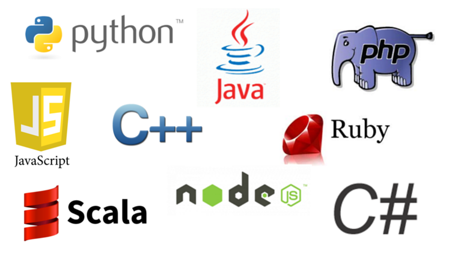

Overview
Programming

Programming is the process of giving machines a set of instructions that describe how a program should be carried out. Programmers spend their careers learning a variety of programming languages and tools so they can effectively build computer programs. It typically starts with a code editor or IDE, used to write source code — a collection of code written in a programming language that other programmers can read.
Once the code is executed, the computer program can run. Different types of computer programs include word processors, database systems, video games, and websites.
Under the hood
Machine language
Machine language is a low-level programming language made out of binary numbers or bits that can only be read by machines. It's also known as machine code or object code, where instructions are executed directly by the CPU.
Alternative to compiling
Interpreter
Some languages don't use compilers at all. Instead, these languages use an interpreter that reads and executes the code directly.
Examples of interpreted programming languages include JavaScript and PHP.
Where it started
History of programming
Many historians believe Ada Lovelace was the first to create a published computer program, in the mid-19th century. She was a mathematician who translated Luigi Federico Menabrea's writings on the Analytical Engine — adding her own extensive notes, including a method for calculating Bernoulli numbers on the Analytical Engine.
The work of mathematician Alonzo Church, along with the Turing machine, were among the first introductions of computer code. In the 1920s, computers were created, followed by the earliest programming languages. Over the following century, as machines and technology continued to evolve, so did the number of programming languages.